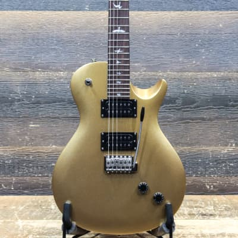
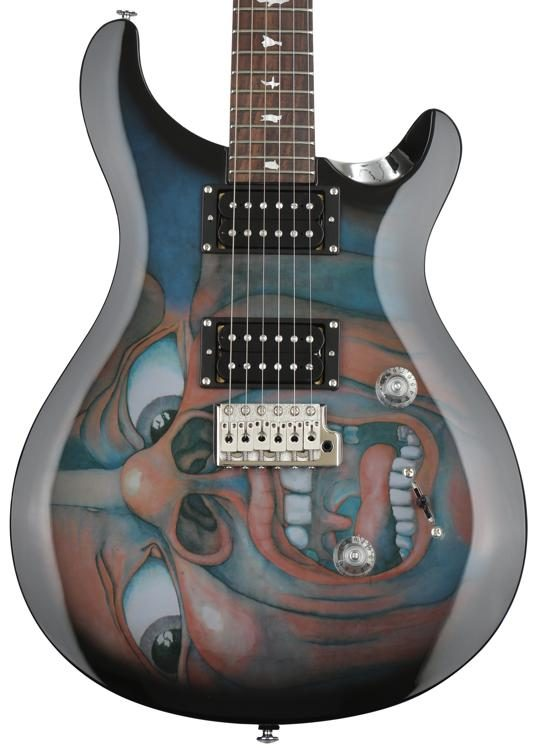

Про компанію
Paul Reed Smith Guitars або PRS Guitars — американська компанія, що займається виробництвом електро-, бас- і акустичних гітар, а також гітарних підсилювачів. Засновник компанії — гітарист і гітарний майстер Пол Рід Сміт. Головний офіс знаходиться в місті Стівенсвілл, Меріленд. Раніше гітари SE серії збирали в Південній Кореї та Індонезії. Зараз виробництво цієї серії сконцентровано тільки в Індонезії. Всі інші інструменти виробляються виключно на території USA.
Історія
У 1975 році Пол Рід Сміт, будучи учнем коледжу, зробив для викладача музики свою першу електрогітару. Після відрахування з коледжу Пол відкрив невелику майстерню по ремонту та виготовленню музичних інструментів, де в період з 1976 по 1985 виготовляв гітари за індивідуальними замовленнями.
У 1982 році виготовляє гітару для одного з найвідоміших на той момент популяризатором продукції PRS — Карлоса Сантани. У 1985 році на виручені кошти та інвестиції замовників Пол відкриває компанію PRS Guitars з виробництва музичних інструментів в Аннаполісі, Меріленд.
В цьому ж році продукція компанії вперше взяла участь на щорічній виставці NAMM Show, де представила свою першу серійну модель PRS Standard. Корпус перших моделей зроблений з червоного дерева з кленовим топом. Гриф також виготовлявся з червоного дерева з палісандровою накладкою і інкрустованими маркерами у вигляді птахів, які згодом стали символом гітар PRS.
1988 році PRS представляє електрогітару з грифом на болтах — PRS CE.
1990 році PRS починає випуск електрогітар з 22 ладами — PRS EG.
У 2000 році PRS представляє доступнішу серію моделей PRS SE, випущених у Південній Кореї. Виробництво електрогітар здійснює компанія World Musical Instrument, а акустичних гітар — Wildwood.
У 2001 році PRS починає випуск електрогітар Singlecut, зовнішній вигляд і форма яких нагадує традиційні гітари Les Paul. Компанія Gibson подає позов про порушення прав на торговий знак проти Пола Ріда Сміта. Судом було винесено заборону на випуск моделі Singlecut з кінця 2004 року. Згодом суддя федерального окружного суду Вільям Дж. Хейнс ухвалив, що PRS Singlecut був лише імітацією Gibson Les Paul. У 2005 році Апеляційний суд США по шостому округу скасував рішення суду нижчої інстанції і постановив відхилити позов Gibson, а PRS відновила виробництво Singlecut без жодних змін.
Моделі
У 1985 році Пол Рід Сміт почав випускати гітари заводського виробництва, які пізніше стали відомі як PRS Standard.
У 1988 році Paul Reed Smith представила свою більш доступну серію гітар, відому як classic electric (моделі CE), яка була знята з виробництва в 2009 році. У 2016 році лінія CE була знову запущена у виробництво.
У 1990 році PRS EG була представлена як перша 22-ладова гітара компанії. Пізніше, в більш успішному 1992 році, був представлений PRS EG II, який включає в себе першу лівобічну гітару PRS.
У 1992 році PRS представила модель Dragon 1. Було випущено всього 50 одиниць. Він відрізнявся хитромудрої інкрустацією у вигляді дракона, яка проходила з пальчикової дошці, широким грифом на 22 лади, містком без вібрато і новим дизайном звукознімача. Зміни в дизайні в порівнянні з попередніми моделями додали помітне поліпшення тональності, що привело компанію до використання тих же характеристик у більш пізніх моделях, таких як
PRS Custom 22. Dragon 2 був випущений в 1993 році, а Dragon 3 - в 1994 році. Обидва були прикрашені інкрустаціями у вигляді драконів, які з кожним роком ставали все більш екстремальними. Було виготовлено лише 100 примірників кожної з 2 моделей. У 1999 році PRS випустила Dragon 2000, який відрізнявся складними вигинами корпусу і тривимірної інкрустацією у вигляді дракона. Всього було випущено 50 Dragon 2000.
У 1994 році Пол Рід Сміт співпрацював з Тедом Маккарті і запустив серію "Маккарті". Серія McCarty пропонує більш вінтажну атмосферу і звучання гітари PRS.
У 2000 році PRS представила більш доступну лінійку гітар під назвою "SE", які виробляються в Кореї компанією World Musical Instrument Co. Ltd. для електрики і Дикого дерева для акустики. PRS виробляє широкий асортимент моделей серії SE, включаючи бас-гітари Custom 24, SE245, SE Kestrel і Kingfisher, а також фірмові гітари, такі як Bernie Marsden, Mark Tremonti, Zach Myers і Carlos Santana та інші.[10] Вони також представили свої моделі Singlecut в 2001 році.
PRS представляє лінійку підсилювачів і акустичних гітар у 2009 році.
У 2013 році PRS додала серію S2, а в лютому 2018 року PRS почала випуск моделі Silver Sky, заснованої на двох улюблених гітарах Джона Майера 1960-х років.
У 2019 році PRS анонсувала три моделі SE signature: PRS SE Santana Singlecut Trem, PRS SE paul's Guitar і PRS SE Schizoid:
-

PRS SE Santana Singlecut Trem
-
PRS SE paul's Guitar
-

PRS SE Schizoid